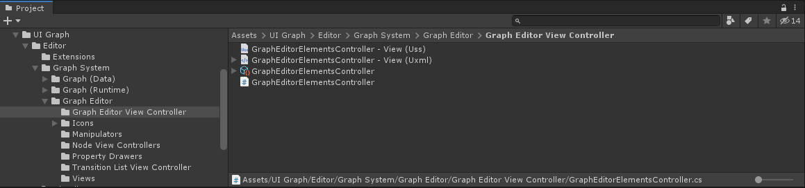
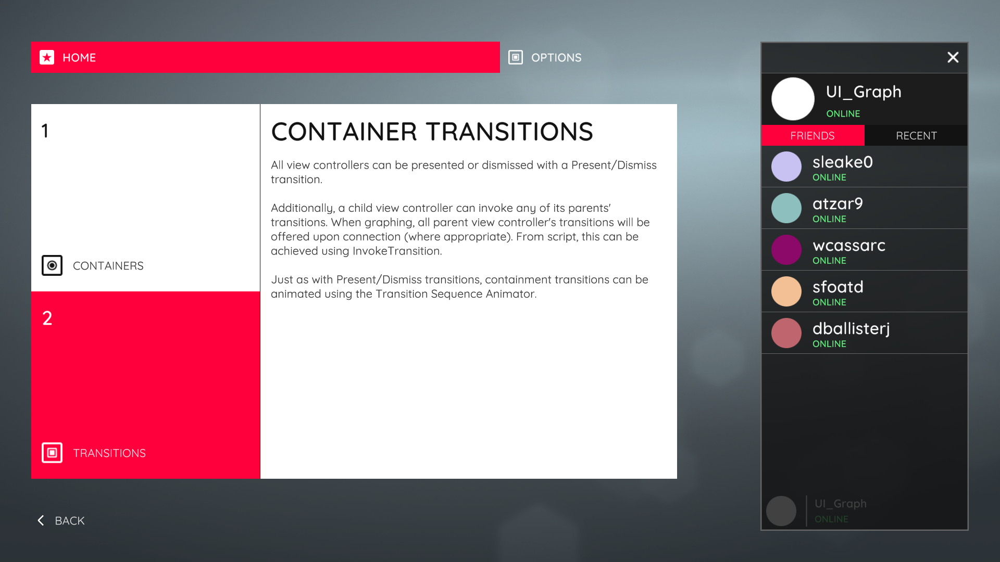

View Controllers
Introduction
A view controller manages a single view of content in your user-interface. This view can be a whole screen or a smaller section of a screen. A view controller manages the life-cycle of its view and is responsible for instantiating and destroying its view as required, such as upon presentation or dismissal.
View controllers can perform transitions to, from, and between other view controllers, allowing you to easily build a complete user-interface flow. These transitions can be animated using the Transition Sequence Animator or with custom scripts.
A view controller and its view are architecturally similar to the Controller and View components of the Model-View-Controller paradigm (Wikipedia).
Structure
There are two concrete base types of view controller – Canvas Controller and Elements Controller. The Canvas Controller manages a view built with Unity's UI Canvas workflow. The Elements Controller manages a view built with Unity's UIElements workflow. Creating a view controller yields a subclass of one of these concrete base types, depending on the workflow you are using.
A view controller consists of a script with a corresponding Scriptable Object instance, as well as a separate View resource. In the UI Canvas workflow, this View is a Prefab.
 Canvas Controller asset structure.
Canvas Controller asset structure.
In the UI Elements workflow, the View is a pair of Uxml/Uss files.
 Elements Controller asset structure.
Note
The UIElements workflow and Elements Controller are currently for internal use only. Only the UI Canvas workflow is currently supported.
Container View Controllers
View controllers can contain, or embed, child view controllers. This allows for complex user-interfaces to be constructed consisting of many nested view controllers. Additionally, view controllers may offer their own containment transitions enabling them to perform transitions between their children. A view controller that offers its own containment transitions is a Container View Controller. Four standard Container View Controllers are provided – Tab Bar, Stack, Navigation, and Split – which are heavily customizable. A wealth of user-interfaces can be created using combinations of the standard container view controllers.
 A user-interface containing several of the standard Container View Controllers as well as child view controller nesting.
View Controller Transitions
View controllers can perform transitions to, from, and between other view controllers, allowing you to build complete user-interface flows.
Present & Dismiss
All view controllers can present and dismiss other view controllers. When a view controller is presented, its view is instantiated, added to the window, and animated on-screen if necessary. Inversely, when a view controller is dismissed, its view is animated off-screen if necessary, removed from the window, and destroyed. The Present and Dismiss transitions are used for presenting full screen content over the current screen.
The recommended way to present and dismiss view controllers is to use a Graph. This allows you to create a flow graph of your user-interface in which you build the presentation flow.
Alternatively, you may use the View Controller system directly at any time by calling the Present and Dismiss methods directly. To present a view controller you must first instantiate an instance of it.
public class FriendsListCanvasController : CanvasController
{
// A reference to the view controller to be presented.
public CanvasController yourViewControllerTemplate;
public void PresentFriendProfile()
{
// Instantiate the view controller and present it.
CanvasController yourViewController = Instantiate(yourViewControllerTemplate);
Present(yourViewController);
}
}
To dismiss a view controller, simply call Dismiss on the view controller whom you wish to dismiss. Alternatively, you may callDismiss on a view controller further down in the presentation stack. Doing so will dismiss to the receiving view controller, destroying all intermediary view controllers, and animating the top-most view controller in the stack.
Containment Transitions
Container View Controllers may offer their own containment transitions. These are transitions between their children. Like Present & Dismiss, containment transitions handle instantiating, animating, and destroying the relevant view controllers. However, unlike Present & Dismiss, containment transitions do not affect the presentation stack. This is because they are entirely contained within their parent view controller. For example, a Tab Bar view controller offers a SetSelectedIndex transition for switching its currently visible content view controller. This can be invoked via its SetSelectedIndex method. The tab bar's content view controller is contained, or embedded, within the tab bar view controller's view itself.
When graphing, a container view controller's transitions will be offered where appropriate to any connection made involving its descendants, allowing you to select them.
Alternatively, any view controller may invoke a containment transition in a parent view controller by either calling the relevant method directly or by using the InvokeTransition method. The InvokeTransition method will ripple up a view controller's parent hierarchy, searching for a parent that can perform the transition.
public void ShowSplitSecondaryViewController()
{
// Invoking a split view controller's 'Show Secondary View Controller' transition from a child.
InvokeTransition(SplitCanvasController.ShowSecondaryViewControllerTransition);
}
Transition Animation
Transitions between view controllers can be animated. The recommended way to animate transitions is to use the Transition Sequence Animator. This allows you to create animation sequences without coding, as well as to script your own animations for use with the system. See the Transition Sequence Animator section for more detail.
Alternatively, you are not required to use the Transition Sequence Animator system and may script your own transition animations. See the workflow-specific guide for more details.
- Canvas Controllers (UI Canvas Workflow)